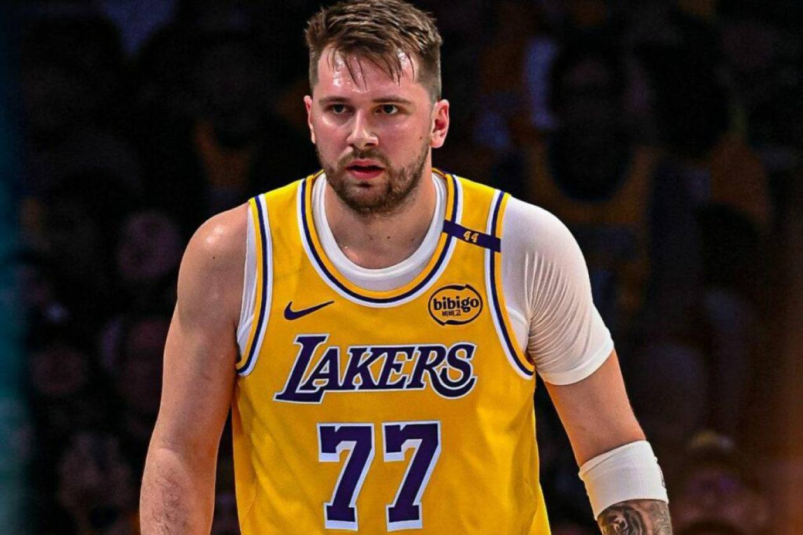

Los periodistas Sam Amick y Josh Robbins han realizado para The Athletic la encuesta anual anónima que suelen elaborar con los jugadores de la NBA. En total, más de 150 de las treinta franquicias. Sobre el tapete, todo: el MVP, los jugadores más sobrevalorados e infravalorados, las franquicias mejor organizadas y las más disfuncionales, los posibles cambios en el juego que estudia la liga… Todo… y también el traspaso de Luka Doncic, cómo no. La gran noticia de este año y de varios, una de las más impactantes de la historia moderna de la NBA.
